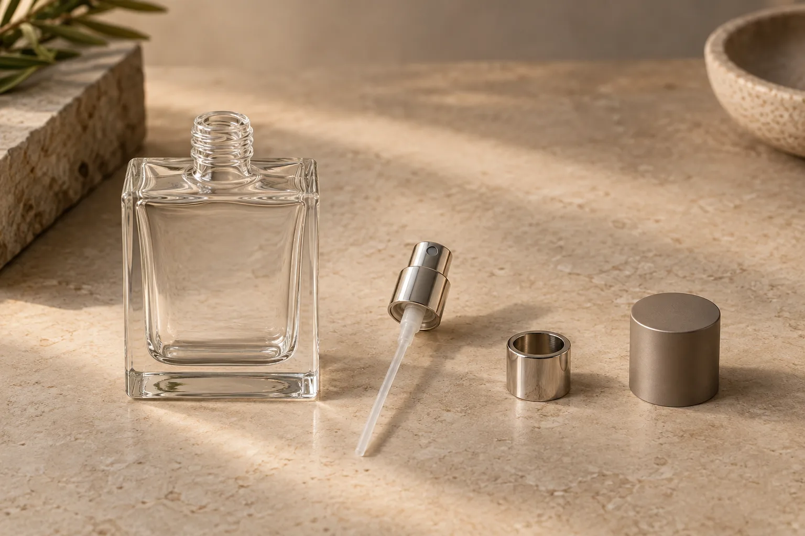
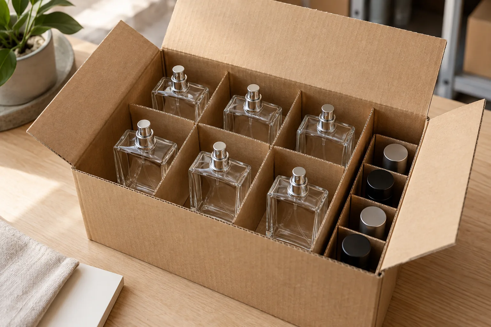

Buying glass perfume bottles wholesale is easier when every supplier quotes the same product scope. A photograph may show a bottle with a sprayer and decorative cap, while the quoted unit price covers only the empty glass. Before comparing prices, identify the exact bottle, the components that go with it and the packed form in which it will arrive.
For a fragrance brand, distributor or packaging buyer, “empty perfume bottles wholesale” should mean new, unfilled packaging specified for a future product line. This guide helps you turn that search into a shortlist, an approved sample and a quotation you can compare. Start with the Glarivo Perfume Bottles collection to select actual model references.
The short version: five decisions before you request a quote
- Choose the bottle: record the model reference, stated capacity, shape, dimensions and finish you want to compare.
- Define the assembly: state whether you need the glass alone or a matched sprayer, collar and cap as well.
- Approve a physical sample: check the bottle and every selected component together, including appearance and dispensing behavior.
- Compare the complete pack: specify decoration, unit protection, retail presentation if needed and master-carton requirements.
- Use the same commercial brief: ask each supplier to price the same quantities, components, packing and delivery basis.
The rest of this guide explains how to make those decisions without treating a catalog image or a general product description as a final specification.
1. Decide what “empty perfume bottle” includes
An empty glass perfume bottle is the unfilled container. A finished perfume package can involve several additional parts: an atomizer or spray pump, a collar or decorative ring, a cap, a dip tube and one or more packaging layers. Those parts may be supplied together, separately or not at all for a particular model. Ask the supplier to list the included components in writing.
Use one of these descriptions in your initial brief:
- Bottle only: the specified empty glass bottle, with any closure or shipping plug listed separately.
- Bottle and dispensing assembly: the bottle plus the exact pump, collar and cap references selected for it.
- Decorated retail unit: the approved glass and components with the specified artwork or surface finish, placed in the agreed unit pack.
If a supplier offers alternatives, request a separate line for each combination. A lower bottle-only price cannot be compared directly with a price that includes a pump, cap and printed box. Keep one component list alongside each quotation so a later substitution is visible.

2. Shortlist by the fragrance line, not by the photograph alone
Start with the intended selling format and your target fill, then review the stated bottle capacity. Record the capacity unit and ask how it is measured. The space needed for filling and the working level should be confirmed with the chosen bottle and formulation; a number in a listing is not a filled-product specification.
Compare the complete silhouette. A square or flat bottle may provide a broad front panel for a label, while a faceted bottle puts more of its appearance into the molded glass. Check the usable artwork area, maximum outside dimensions, bottle weight and how the shape sits in its retail pack. These are sample checks, not qualities that can be established from a single front-view image.
The current Glarivo collection offers starting points for a shortlist. The SW-322 Perfume Bottle lists a 100 mL capacity option; the SW-308 Faceted Perfume Bottle also lists 100 mL and offers a different exterior profile; and the SW-306 Square Perfume Bottle provides another shape to compare. These references identify catalog listings, not a promise that the same components, finishes or order quantities apply to all three. Request a current specification for each model before selecting a range.
If you are building more than one size or finish, treat each configuration as its own line in the comparison. Confirm whether the supplier can provide the desired variation for the exact glass model instead of assuming that a photographed finish or a neighboring product's size can be transferred to it.
3. Confirm the neck, sprayer and cap as one assembly
The neck finish controls which dispensing components can be assembled with the bottle. Ask for the selected model's neck specification and the references of the pump, collar and cap proposed for it. Similar-looking components may differ in fit or dimensions. A written compatibility statement is useful, but the assembled sample is the approval point.
Evaluate the sample with the intended filling and use process:
- Assembly fit: check the attachment method, seating, collar position and cap retention on the actual bottle.
- Dip tube: confirm its length and position after assembly; an unsuitable tube can affect dispensing or appear awkward through clear glass.
- Spray performance: assess the selected pump with the intended formulation and fill level using the buyer's test process.
- Closure integrity: agree how the filled assembly will be checked for leakage or loss during handling and shipment.
- Appearance: view the bottle, pump, collar and cap together from the front, side and top, including any visible gap or alignment issue.
The fragrance formulation and every material it contacts may need a compatibility review. Ask the responsible product or packaging specialist to approve the filled assembly for its intended market and distribution route. Do not infer that a pump is suitable for a formula merely because it fits the bottle mechanically.
4. Specify decoration and presentation separately
A clear undecorated bottle, a coated bottle and a printed retail unit are different purchase scopes. If you need color, frosting, printing, labeling or another finish, name the process proposed by the supplier for the selected model. Supply artwork, colors, placement dimensions and any part of the glass that must remain undecorated. Ask for a proof and then an approved finished sample when appearance is material to the order.
Review the decorated sample under the lighting and viewing distance relevant to your sales channel. Inspect the front panel, shoulders, base and any raised or faceted details. Check legibility and registration on the actual curved or flat surface, and agree the acceptable appearance range before production.
If the bottle will be sold in a carton or gift box, specify that pack separately from the shipping carton. A retail box describes presentation; the master carton and its inserts must also protect the glass and components during the agreed transport route. For broader barcode and retail-label planning, use the private-label glassware packaging guide.

5. Compare wholesale offers on the same basis
Unit price alone cannot show whether two offers cover the same package. Ask each supplier to return the same quotation fields, with model-specific minimum quantities and lead times rather than one figure applied to the entire range.
- Glass bottle reference, capacity, dimensions, color and finish.
- Pump, collar, cap and any other included component references and quantities.
- Decoration method, artwork scope and setup or tooling charges, if applicable.
- Quantity per model and finish, minimum order requirement and sample cost.
- Unit pack, inner pack and master-carton configuration.
- Currency, delivery basis, freight inclusions and destination.
- Sample approval steps, production timing and the event that starts the quoted lead time.
Separate the price of the empty bottle from the price of the assembled and decorated unit where possible. If two suppliers propose different pumps or packs, record those differences before comparing totals. Ask whether repeat orders will use the same glass mold, component references and approved decoration sample.
A very low minimum quantity for a plain stock bottle does not establish the same minimum for a custom color, printed bottle or bespoke pack. Confirm every variation against the actual quotation. Likewise, do not treat an advertised lead time as a delivery date until the sample, artwork, quantity and shipping basis are agreed.
6. Approve samples and packing before the bulk order
Request a sample that represents the configuration you intend to buy. If the final order includes a sprayer, cap, decoration and retail box, a bare glass bottle is only an early screening sample. Keep the approved assembly and the versioned specification together for receiving and reorders.
On the sample, check capacity and outside dimensions against the written specification. Inspect the neck and rim, visible glass defects, base stability, color and finish consistency, printed or labeled areas, and the fit of each assembled component. Perform the agreed dispensing and compatibility checks with the intended fill. Record which checks are visual, which are measured and which require a separate test report.
Then inspect a packed sample. Confirm the count of bottles and components per sellable unit and carton. Check that glass bodies, caps and sprayers cannot strike one another, that inserts do not mark decorated surfaces, and that the carton dimensions and gross weight match the proposed transport plan. Agree any transit validation appropriate to the route with the supplier and logistics partner; a neat-looking box alone does not prove protection.
7. Send one clear request for quotation
You can copy this brief and replace the bracketed fields. Leaving an unknown field marked for confirmation is better than letting two suppliers silently make different assumptions.
- Project and destination: [fragrance line or intended use] for [destination market].
- Glass shortlist: [links or model references], [desired capacity and finish] for each model.
- Components: quote [glass only / glass plus named sprayer, collar and cap]; confirm exact references and what is included.
- Decoration: [artwork, color, process or undecorated finish]; provide proof and sample requirements.
- Order: [quantity per model and finish], [target delivery milestone], [delivery location].
- Packing: [unit pack], [pieces per inner and master carton], [retail box if required].
- Approval: provide drawings or specifications, assembled samples, packed samples, model-specific MOQ, itemized charges and a proposed approval schedule.
Browse the Perfume Bottles collection, save the model links you want to compare and send this brief with your inquiry. Glarivo can then discuss the actual bottle and component combination instead of guessing from a generic request for “empty perfume bottles.”
Frequently asked questions
Are pumps and caps included when I order empty perfume bottles wholesale?
Not necessarily. “Empty” describes an unfilled container, not a standard list of accessories. Ask the supplier to identify the glass, pump, collar, cap and packing included in the quoted unit price. Approve the assembled sample for the selected model.
Can I use any perfume sprayer with a glass bottle that looks similar?
Do not assume interchangeability from appearance. Confirm the bottle's neck specification and the proposed pump and collar references, then check an assembled sample with the intended filling and use process.
Should I compare bottle-only prices or complete-package prices?
Compare both when they answer different sourcing options, but keep the scopes explicit. The decision for a retail fragrance line should consider the selected bottle, dispensing assembly, decoration, packing and delivery basis together.
What should I approve before a wholesale repeat order?
Keep the approved glass and component references, drawings, finished sample, artwork revision, packing specification and agreed appearance criteria. Ask the supplier to flag any proposed substitution before a repeat order is confirmed.